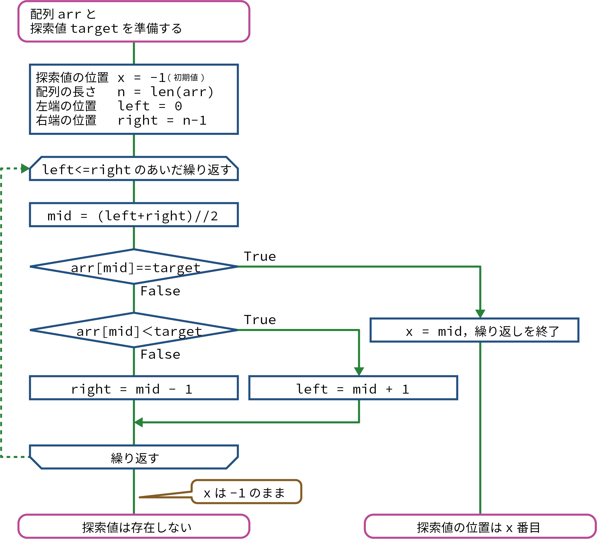
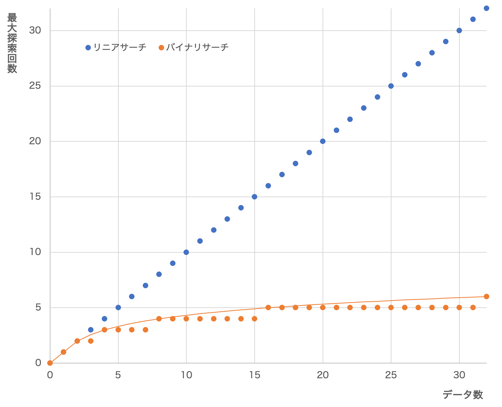

(1) バイナリサーチ（二分探索法）
バイナリサーチ（二分探索法）とは
バイナリサーチ（二分探索法）は、要素が昇順(または降順)に並んでいる配列に対して高速に探索できるアルゴリズムです。調べる範囲を半分に絞りながら探す方法なので、２つ（バイナリ）に分けて探索ことから、バイナリサーチといいます。
手順
昇順（または降順）に並んでいる配列に対して、次の操作をします。
- 探索範囲(最初は全範囲)の左端の位置(left)と右端の位置(right)を決めます。
- 探索範囲の中央の位置(mid)を求めます: mid = (left + right) // 2。
- 中央値(arr[mid])が探索値(x)と一致したら、中央の位置(mid)が探索値の位置となり、探索を終了します。
- 中央値が探索値より小さければ(arr[mid] < x)、中央の位置よりも左側にはより小さい値しかないので、左半分を調べる必要はなくなります。
よって、探索範囲を右半分にすればよいので、探索範囲の左端を中央の位置より１つ右にします(left = mid + 1)。 - 中央値が探索値よりも大きければ(arr[mid] > x)、中央の位置よりも右側にはより大きい値しかないので、右半分を調べる必要はなくなります。
よって、探索範囲を左半分にすればよいので、探索範囲の右端を中央の位置より１つ左にします(right = mid - 1)。 - 探索範囲にデータが存在する間は、(2)〜(5)を繰り返します。
フローチャート
デモンストレーション
プログラム（基本）
上記の手順をプログラムに書くと、次のようになります。
Colaboratoryのノートブックに書き写しながら、理解しましょう。
arr = [1, 3, 5, 7, 9, 11, 13, 15, 17, 19]
print(arr)
target = int(input("探索値:"))
x = -1 # 探索値のインデックス番号（初期値: -1）
n = len(arr)
left = 0 # 探索範囲の左端の位置
right = n - 1 # 探索範囲の右端の位置
while left <= right: # 探索範囲の左端と右端の間にデータがある限り繰り返す
mid = (left + right) // 2 # 探索範囲の中央の位置
if arr[mid] == target: # 中央値＝探索値のとき
x = mid # xに中央の位置を代入して終了
break
elif arr[mid] < target: # 中央値＜探索値のとき、左端を中央の位置より１つ右に移動する
left = mid + 1
else: # 中央値＞探索値のとき、右端を中央の位置より１つ左に移動する
right = mid - 1
if x != -1:
print(target, "のインデックス番号は", x)
else:
print(target, "は存在しません。")
[1, 3, 5, 7, 9, 11, 13, 15, 17, 19]
探索する数値:5 #5を入力した場合
5 のインデックス番号は 2
探索回数
\(n = 8\)の配列[0, 1, 2, 3, 4, 5, 6, 7]をバイナリサーチしたときに、各数字が見つかるときの探索回数は次の表の通りです。
| 探索回数 | 0 | 1 | 2 | 3 | 4 | 5 | 6 | 7 |
|---|---|---|---|---|---|---|---|---|
| 1回目 | 3 | |||||||
| 2回目 | 1 | 5 | ||||||
| 3回目 | 0 | 2 | 4 | 6 | ||||
| 4回目 | 7 |
また、\(n = 15\)の配列[0, 1, 2, ･･･, 14]をバイナリサーチしたときに、各数字が見つかるときの探索回数は次の表の通りです。
| 探索回数 | 0 | 1 | 2 | 3 | 4 | 5 | 6 | 7 | 8 | 9 | 10 | 11 | 12 | 13 | 14 |
|---|---|---|---|---|---|---|---|---|---|---|---|---|---|---|---|
| 1回目 | 7 | ||||||||||||||
| 2回目 | 3 | 11 | |||||||||||||
| 3回目 | 1 | 5 | 9 | 13 | |||||||||||
| 4回目 | 0 | 2 | 4 | 6 | 8 | 10 | 12 | 14 |
また、\(n = 16\)の配列[0, 1, 2, ･･･, 15]では次の通りです。
| 探索回数 | 0 | 1 | 2 | 3 | 4 | 5 | 6 | 7 | 8 | 9 | 10 | 11 | 12 | 13 | 14 | 15 |
|---|---|---|---|---|---|---|---|---|---|---|---|---|---|---|---|---|
| 1回目 | 7 | |||||||||||||||
| 2回目 | 3 | 11 | ||||||||||||||
| 3回目 | 1 | 5 | 9 | 13 | ||||||||||||
| 4回目 | 0 | 2 | 4 | 6 | 8 | 10 | 12 | 14 | ||||||||
| 5回目 | 15 |
最小探索回数
最小探索回数は、探索値が中央にあった場合なので１回です。
最大探索回数
最大探索回数は、上記の具体例からもわかるとおり、データ数を \(n\) 個とすると、\(2^x \leqq n < 2^{x+1}\) のとき、最大探索回数は \(x+1\) 回と表せます。
これを対数を用いて表すと \(x \leqq \log_2 n < x+1\) となり、\(\log_2 n\) の整数部分が \(x\) となることから、ガウス記号を用いて \(x=[\log_2 n]\) と表すことができます。したがって、最大探索回数は \([\log_2 n]+1\) 回となります。
※\(2^3 = 8 \) は、対数を用いると \(\log_2 8 = 3\) と表せます。
平均探索回数
バイナリサーチの平均探索回数を厳密に求めることは大変なので、次のように考えます。
最大探索回数の1回前までで全データの半分以上を探索することができるので、平均探索回数は\([\log_2 n]\) 回となります。
最大探索回数の比較
リニアサーチとバイナリサーチの探索回数を比較すると、次のようになります。
データ数が多くなっても、バイナリサーチはリニアサーチに比べてあまり増加しないことがわかります。バイナリサーチでは、データ数が２倍になっても、探索回数は１回増えるだけなので、効率がいい探索方法であることがわかります（ただし、データが昇順または降順に並んでいる必要があります）。